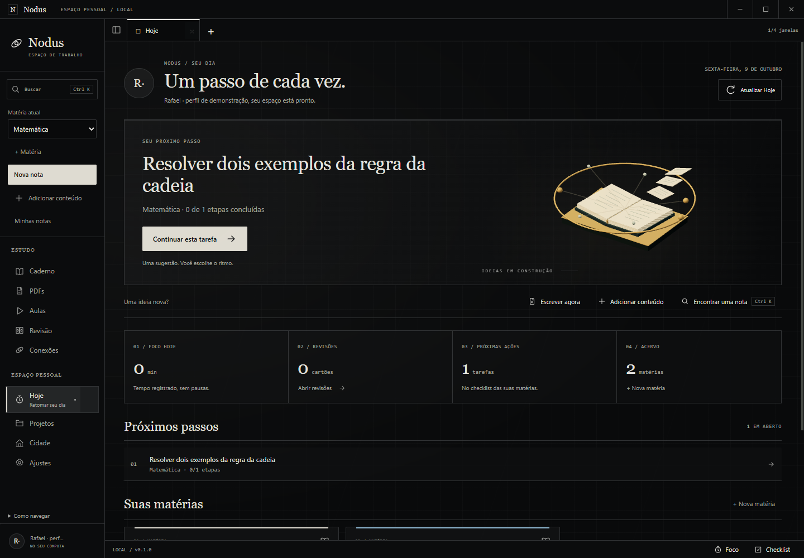
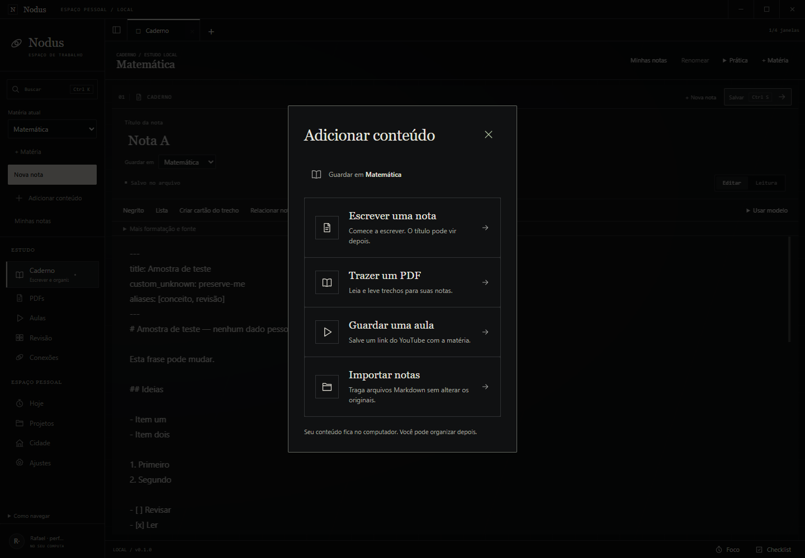
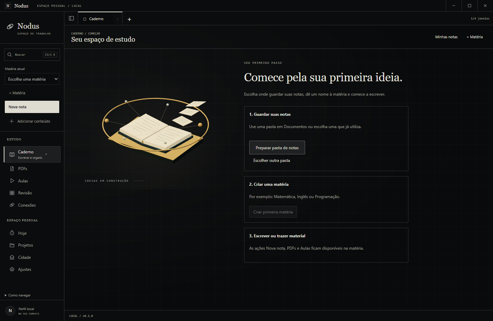
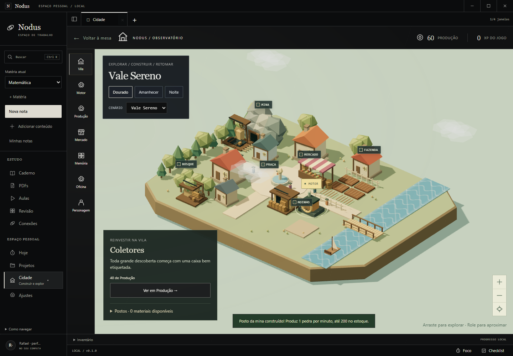
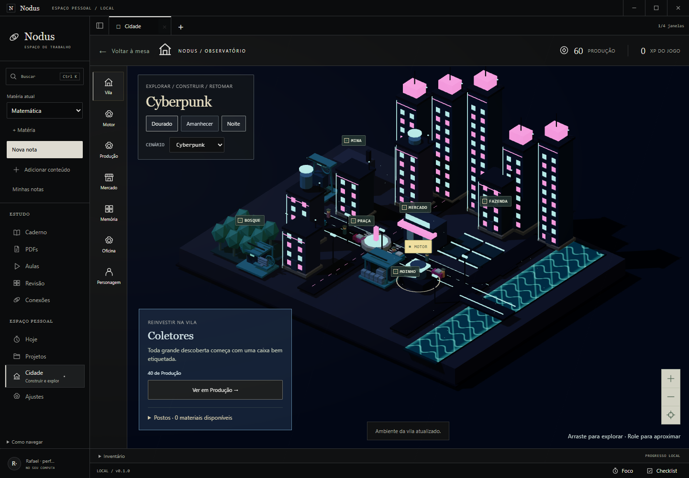
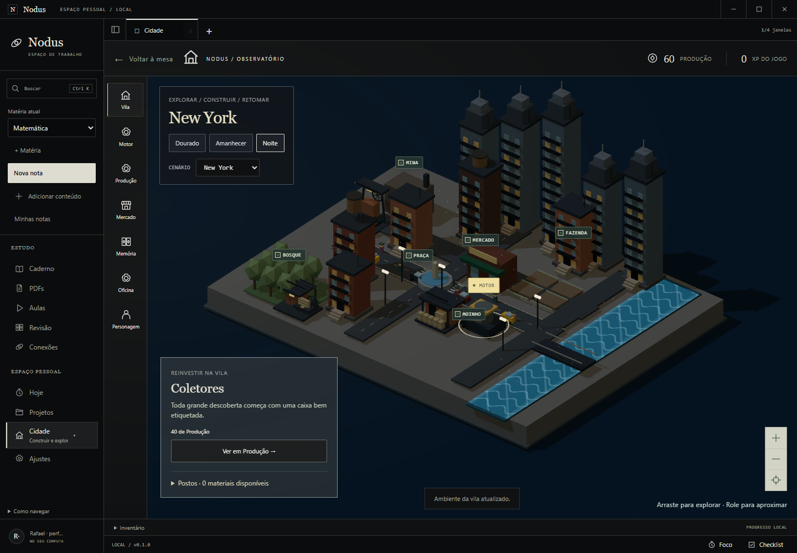
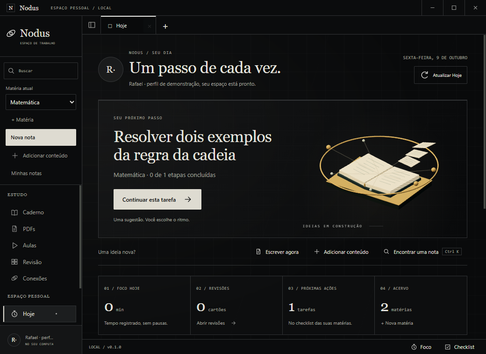
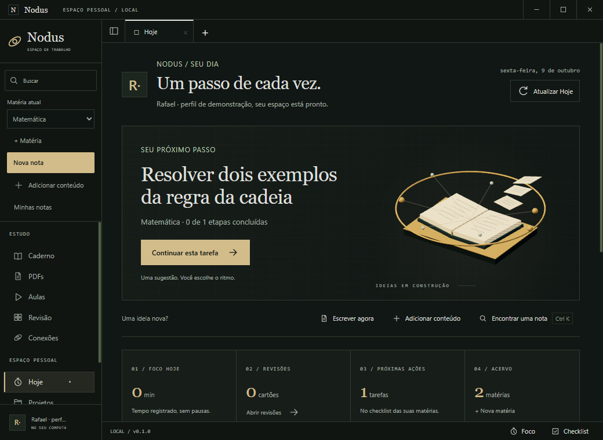
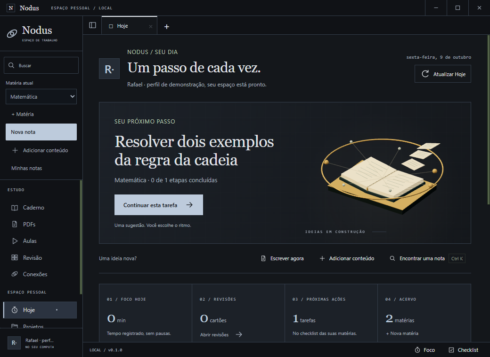

Hoje aponta uma ação
Revisões pendentes, uma tarefa da última matéria ou sua mesa para retomar. O botão de tarefa abre a matéria e o checklist. Escrever e adicionar material ficam à mão.
Seu espaço de estudo ficou mais fácil de começar e retomar. A Cidade ganhou movimento, construções próprias e progresso visível.
O acabamento usa os módulos e dados que já existiam. A revisão se concentrou na navegação, na entrada de conteúdo e nas animações 3D que ajudam a perceber o estado do app.
Revisões pendentes, uma tarefa da última matéria ou sua mesa para retomar. O botão de tarefa abre a matéria e o checklist. Escrever e adicionar material ficam à mão.
Escolha escrever uma nota, trazer um PDF, guardar uma aula do YouTube ou importar Markdown. A matéria de destino aparece antes da ação; o título da nota pode vir depois.



O menu explica a área selecionada e conserva a matéria atual. O layout foi conferido nos quatro temas, com janela ampla, janela compacta e até quatro painéis de estudo.
No Hoje e no primeiro uso, páginas suspensas e ideias conectadas orbitam um livro aberto. A composição responde suavemente ao ponteiro. Na Cidade, o rio ganha ondas por shader, nuvens se deslocam e pontos de luz aparecem à noite.
Depósito, posto do bosque e posto da mina têm silhuetas próprias. O próximo projeto aparece em contorno no terreno. Concluir uma construção recebe animação 3D e partículas.
Rodas e cargas trabalham enquanto há espaço no estoque. Recolher materiais e gerar um pulso válido recebem feedback. Antenas e indicadores do distrito também se movimentam.



Movimento reduzido mantém cenas estáticas. Minimização e áreas ocultas pausam os loops; o livro também pausa fora do viewport. Se WebGL falhar, objetivos e ferramentas continuam acessíveis. Recursos, XP e estoques seguem calculados no processo principal.
82/82 testes, typecheck e pacote aprovados. Os 204 arquivos do build são idênticos aos do ASAR.
Abrir a validação técnica · Manifesto dos artefatos · Guia de uso
As imagens usam conteúdo fictício em perfis isolados. A compreensão por usuário leigo segue pendente em GAM-05/C8. Seleção manual do diálogo de arquivos, desempenho em outros GPUs e integrações externas da alpha continuam fora destas provas.


